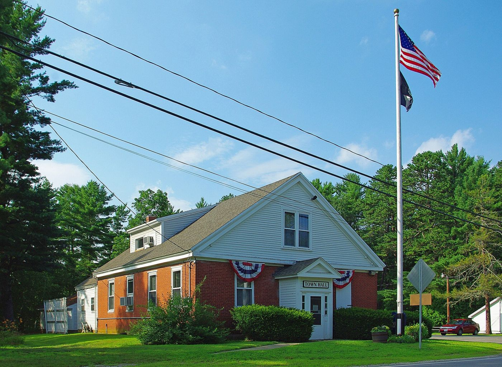

Biography
Henry Tufts was born in Medford on 24 September 1716, a son of Thomas Tufts and Mary (Lynde) Tufts. The family record says he was briefly apprenticed in physic to his uncle, Dr. Simon Tufts, before turning to tailoring in Boston. He moved to New Hampshire, married Mary Wedgwood at Newmarket in 1742, and later farmed at Lee, where he died in 1780 (Tufts Kinsmen, Vol. I, p. 104, no. 8-4).
“HENRY TUFTS, tailor b. 24, Sep. 1716 in Medford, {Middlesex} Mass. [MVR2 148] d. 1780 in Lee, {Strafford} N. H. m 1742 in Newmarket, {Rockingham} N. H. to MARY WEDGWOOD dau of John and Elizabeth (Mather) Wedgwood b. 1722 in Newmarket, {Rockingham} N. H. d. 1782 in Lee, {Strafford} N. H. had 1) Henry, 2) Jonathan, 3) Thomas, 4) Eliphalet, 5) Molly, 6) John”
Tufts Kinsmen, Vol. I, p. 104, no. 8-4
His eldest son was Henry Tufts Jr. (1748–1831) , whose memoir of 1807 made the family name notorious in New England.
, whose memoir of 1807 made the family name notorious in New England.
Service Record

Town: Medford, Mass.; Newmarket and Lee, N.H. · Dates: 24 Sept. 1716 – 1780
Patriotic service: signed the Association Test at Lee, New Hampshire, in 1776, at about fifty-nine (Tufts Kinsmen, Vol. I, p. 104, no. 8-4). Henry Jr.’s entry adds that father and son signed together (Tufts Kinsmen, Vol. I, p. 62–63).
Family Connection
Parents: Thomas Tufts and Mary (Lynde) Tufts. Uncle: Dr. Simon Tufts (1700–1747) (per the family record). Wife: Mary Wedgwood. Children (Tufts Family 25): Henry , Jonathan, Thomas
, Jonathan, Thomas , Eliphalet, Molly and John.
, Eliphalet, Molly and John.
Relatives with profiles on this site: son Henry Tufts Jr. (1748–1831) ; son Thomas Tufts of Lee (family no. 25-3)
; son Thomas Tufts of Lee (family no. 25-3) ; uncle Dr. Simon Tufts (per the family record); see also Henry Tufts (of Lee, N.H.), the older page
; uncle Dr. Simon Tufts (per the family record); see also Henry Tufts (of Lee, N.H.), the older page .
.
Spouse(s)
- Mary (Wedgwood) Tufts, daughter of John and Elizabeth (Mather) Wedgwood; born 1722 at Newmarket, N.H.; married 1742 at Newmarket; died 1782 at Lee, N.H. (Tufts Kinsmen, Vol. I, p. 104, no. 8-4).
Authoritative IDs / Index Numbers
| Source | ID / status |
|---|---|
| Perseus person index (auth=) | Note: Pending further work. |
| Find a Grave memorial | Note: Pending further work. |
| Brooks, History of Medford (1855) register no. | Note: Pending further work. |
| Mass. Soldiers and Sailors | Not yet checked for this page |
| DAR ancestor no. | Note: Pending further work. |
| FamilySearch ID | Note: Pending further work. |
| Geni profile | Note: Pending further work. |
| WikiTree ID | Note: Pending further work. |
| Town / vital records | Medford VRs not yet checked by volume and page |
Only IDs confirmed against dates and family are given as matches. “Not yet checked” means the source has not been searched; “Checked, not found” means it was searched without a match.
⚑ Unverified
Possible conflation: this site’s earlier page Henry Tufts (of Lee, N.H.) carries the family number 25-1 and the date “abt. 1735.” In Tufts Kinsmen as summarised here, 25-1 is Henry Jr., born 24 June 1748, the memoirist, while the Boston tailoring apprenticeship and the move to Newmarket belong to his father, Henry Sr. (8-4), born 1716. The two men appear to be blended on that page. Both are kept separate here and the older page is left as it stands. Uncle Simon: the family record calls Dr. Simon Tufts his uncle; this has not been checked against Medford records. Page: the 8-4 entry is cited as printed p. 104 in the research table used; the page has not been seen. Thomas: the link to Thomas Tufts of Lee (25-3, 1757–1834) follows the family numbering. Note: Pending further work.
carries the family number 25-1 and the date “abt. 1735.” In Tufts Kinsmen as summarised here, 25-1 is Henry Jr., born 24 June 1748, the memoirist, while the Boston tailoring apprenticeship and the move to Newmarket belong to his father, Henry Sr. (8-4), born 1716. The two men appear to be blended on that page. Both are kept separate here and the older page is left as it stands. Uncle Simon: the family record calls Dr. Simon Tufts his uncle; this has not been checked against Medford records. Page: the 8-4 entry is cited as printed p. 104 in the research table used; the page has not been seen. Thomas: the link to Thomas Tufts of Lee (25-3, 1757–1834) follows the family numbering. Note: Pending further work.
Links and Resources
Every source, record, map, survey, marker and artifact tied to this person, gathered in one place. Page numbers are given where a book is cited.